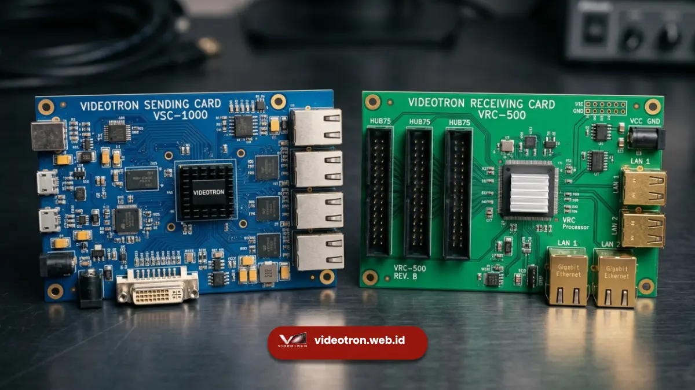

Komponen videotron terdiri dari modul LED, power supply, kabinet, receiving card, sending card, dan kabel data yang bekerja bersama untuk menampilkan gambar secara stabil. Memahami fungsi setiap komponen membantu pembeli menilai kualitas videotron secara lebih menyeluruh.
Poin Kunci Komponen Videotron:
- Modul LED adalah unit tampilan utama yang berisi titik-titik LED penghasil gambar.
- Power supply menyalurkan daya listrik ke seluruh modul secara merata.
- Receiving card menerima sinyal dari sending card untuk ditampilkan pada modul.
- Sending card berfungsi sebagai pusat pengiriman data gambar dari sumber konten.
- Kabinet dan kabel data menopang seluruh sistem agar terpasang rapi dan aman.
Apa Saja Komponen Utama pada Videotron?
Komponen utama videotron terdiri dari modul LED, kabinet, power supply, receiving card, sending card, dan kabel data yang saling terhubung dalam satu sistem tampilan digital.
Setiap komponen memiliki peran yang saling melengkapi. Modul LED bertugas menampilkan gambar secara fisik.
Sementara komponen elektronik lain seperti power supply dan sending card bekerja di belakang layar untuk memastikan gambar tersebut tampil dengan stabil, sinkron, dan sesuai dengan sumber konten yang diputar.
Memahami fungsi masing-masing komponen ini penting bagi pembeli agar dapat menilai kualitas videotron secara menyeluruh, bukan hanya dari tampilan modul LED yang terlihat di permukaan.
Apa Fungsi Modul LED pada Videotron?
Modul LED berfungsi sebagai unit tampilan utama videotron yang berisi susunan titik-titik LED untuk menghasilkan gambar, video, atau teks yang terlihat oleh audiens.
Setiap modul LED memiliki ukuran fisik dan pixel pitch tertentu yang menentukan tingkat ketajaman gambar.
Beberapa modul kemudian disusun berdampingan membentuk satu layar videotron berukuran besar sesuai kebutuhan proyek, baik untuk instalasi indoor maupun outdoor.
Kualitas modul LED biasanya dinilai dari konsistensi warna antar modul, tingkat kecerahan, serta ketahanan terhadap suhu dan kelembapan, terutama untuk videotron yang dipasang di area terbuka.
Bagaimana Power Supply Menjaga Videotron Tetap Stabil?
Power supply berfungsi menyalurkan dan mengubah arus listrik ke tegangan yang sesuai untuk seluruh modul LED agar videotron dapat menyala secara stabil dan merata.
Karena videotron biasanya membutuhkan daya listrik dalam jumlah besar, power supply berkualitas rendah berisiko menyebabkan kecerahan yang tidak merata antar modul atau bahkan kerusakan pada komponen LED akibat fluktuasi tegangan.
Power supply yang baik umumnya dilengkapi dengan sistem proteksi terhadap arus berlebih dan suhu berlebih.
Jumlah power supply yang dibutuhkan disesuaikan dengan luas area videotron dan tingkat kecerahan yang diinginkan, sehingga distribusi daya listrik tetap seimbang di seluruh permukaan layar.
Apa Perbedaan Sending Card dan Receiving Card?
Sending card berfungsi mengirimkan data gambar dari sumber konten seperti komputer ke sistem videotron, sedangkan receiving card menerima data tersebut dan meneruskannya ke modul LED untuk ditampilkan.

Pemasangan sending card dan receiving card pada sistem pengontrol videotron untuk sinkronisasi data visual.Sending card biasanya terhubung langsung dengan perangkat sumber konten dan bertugas mengatur resolusi, refresh rate, serta sinkronisasi antar modul.
Receiving card kemudian dipasang pada tiap modul atau kelompok modul untuk menerjemahkan sinyal dari sending card menjadi tampilan visual yang akurat.
Kombinasi sending card dan receiving card yang berkualitas menentukan seberapa halus dan stabil gambar videotron ditampilkan, terutama saat menampilkan video dengan pergerakan cepat.
Apa Peran Kabinet dan Kabel Data pada Sistem Videotron?
Kabinet berfungsi sebagai rangka dan pelindung fisik bagi modul LED, sementara kabel data menghubungkan seluruh komponen elektronik agar dapat berkomunikasi dan bekerja secara sinkron.
Kabinet yang presisi memastikan sambungan antar modul rapat sehingga tidak muncul garis pemisah yang mengganggu tampilan gambar.
Kabel data yang tertata rapi dan berkualitas baik turut mengurangi risiko gangguan sinyal yang dapat menyebabkan flicker atau tampilan gambar yang tidak sinkron.
Pengaturan kabinet dan kabel data yang baik juga mempermudah proses maintenance ketika salah satu modul memerlukan perbaikan atau penggantian di kemudian hari.
Kesimpulan dan Konsultasi Gratis
Videotron bukan sekadar layar LED, melainkan sistem yang terdiri dari modul LED, power supply, kabinet, sending card, receiving card, dan kabel data yang bekerja bersama. Memahami fungsi setiap komponen membantu Anda menilai kualitas videotron secara lebih objektif sebelum memutuskan untuk membeli.
Ingin tahu spesifikasi komponen videotron yang sesuai untuk proyek Anda?
Konsultasikan kebutuhan Anda bersama tim teknis kami untuk mendapatkan rekomendasi yang tepat.

Hawa Nadira
LED Technology Consultant dan Visual Educator
Konsultan dan spesialis solusi display digital berdedikasi tinggi yang fokus membagikan panduan edukatif mengenai penerapan teknologi layar LED videotron untuk kebutuhan interior modern di Indonesia.